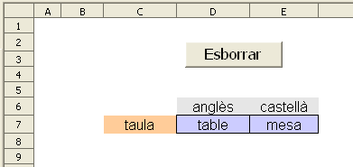
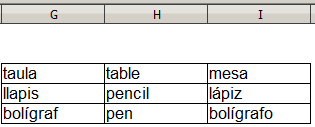
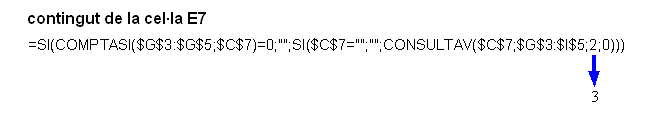
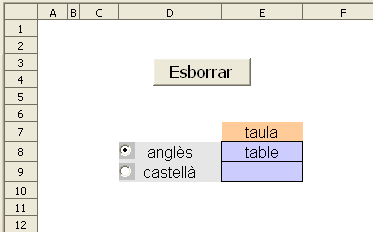
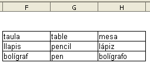
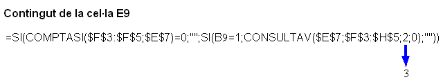

Presentació gràfica de l'activitat

Funcions que es fan servir en aquesta activitat
=SI()
=COMPTASI()
=CONSULTAV()
Objectiu de l'activitat
Fer un diccionari particular per traduir una paraula catalana a dos idiomes (anglès i castellà) mitjançant la funció CONSULTAV().
Desenvolupament de l'activita
1. Obrir el fitxer M4 i afegir un nou full amb el nom de M4P8 diccionari 1
2. Escriure a les cel·les del rang G3:I5 les següents paraules:

En aquesta activitat només es poden consultar tres paraules perquè ja es suficient per mostrar com funciona l'activitat. Quan s'hagi estudiat com funciona l'activitat, es podran afegir tantes paraules com es vulgui i es podrà augmentar el número d'idiomes a consultar.
3. Formatar les cel·les del rang
C6:E7 com es veu en el gràfic de presentació de l'activitat. A la cel·la
C7 s'escriurà la paraula que es vol consultar.
4. Escriure a la cel·la
D7:
=SI(COMPTASI($G$3:$G$5;$C$7)=0;"";SI($C$7="";"";CONSULTAV($C$7;$G$3:$I$5;2;0)))
La fórmula =SI(COMPTASI($G$3:$G$5;$C$7)=0;"" permet que la cel·la no mostri cap valor en cas que no es trobi la paraula que hagi escrita a la cel·la C7. De no posar aquesta fórmula, apareixeria el valor #N/A donant a entendre que no es troba la paraula que hi ha a la cel·la E7.
La Fórmula SI($C$7="";"";CONSULTAV($C$7;$G$3:$I$5;2;0)) permet fer la consulta de la paraula que hagi escrita a cel·la C7 en la segona columna del rang G3:I5 sempre i quan aquesta cel·la sigui tingui contingut.
5. Copiar la cel·la
D7 a la cel·la
E7 tenint en compte que cal canviar el número
2 pel
3 (fent així referència a la tercera columna del rang
G3:I5)

6. Escriure a la cel·la
F7:
=SI(C7="";"";SI(COMPTASI(G3:I5;C7)=0;"Aquesta paraula no està entrada en aquest diccionari particular.";""))
En cas que a la cel·la C7 no hagi cap valor, la cel·la F7 no mostrarà cap valor; en cas contrari, i suposant que la paraula que hi hagi escrita a la cel·la C7 no es trobi (valor de repetició = 0), llavors es mostraria el text de "Aquesta paraula no està entrada en aquest diccinari particular".
7. Fer una macro amb la funció d'esborrar el contingut de la cel·la
C7.
8. Crear un botó de prémer de Controls de formulari i assignar-li la macro feta anteriorment.
9. Protegir les cel·les que convingui.
10. Fer no visibles les cel·les que convingui.
11. Comprovar que l'activitat funcioni correctament.
12. Desar el fitxer
M4
Presentació gràfica de l'activitat

Funcions que es fan servir en aquesta activitat
=SI()
=COMPTASI()
=CONSULTAV()
Desenvolupament de l'activitat
Fer un diccionari particular per traduir una paraula catalana a dos idiomes (anglès i castellà) mitjançant camps d'opció.
Desenvolupament de l'activitat
1. Obrir el fitxer M4 i afegir un nou full amb el nom de M4P8 diccionari 2
2. Escriure a les cel·les del rang F3:H5 les següents paraules:

3. Formatar les cel·les del rang D7:E9 com es veu en el gràfic de presentació de l'activitat.
4. Crear un camp d'opció enllaçant-lo a la cel·la B8. Col·locar aquest camp d'opció com es veu a l'activitat de presentació (cel·la D8)
Quan es fa clic al camp d'opció situat a la cel·la D8, apareix paraula VERITAT a la cel·la B8 perquè aquest camp d'opció està enllaçat a la cel·la B8. Tenint en compte que la paraula VERITAT també es pot interpretar com valor 1, només caldrà fer servir la funció lògica =SI() i la funció CONSULATV() per trobar la paraula traduïda a l'idioma que correspongui en cas que la paraula consultada estigui al diccionari particular.
5. Escriure a la cel·la
E8:
=SI(COMPTASI($F$3:$F$5;$E$7)=0;"";SI(B8=1;CONSULTAV($E$7;$F$3:$H$5;2;0);""))
6. Seleccionar el camp d'opció creat anteriorment, fer una copia i enganxar-lo a la cel·la
D9.
7. Enllaçar aquest segon camp d'opció a la cel·la
B9.
8. Copiar la cel·la
E8 i enganxar-la a la cel·la
E9 tenint en compte que només cal canviar el numero
2 pel
3 (fent així referència a la tercera columna del rang de cel·les
F3:H5)

9. Escriure a la cel·la
F7:
=SI(E7="";"";SI(COMPTASI(F3:F5;E7)=0;"Aquesta paraula no està entrada en aquest diccionari particular";""))
10. Desprotegir les cel·les
B8:B9 perquè funcioni bé l'activitat una vegada s'hagi protegit el full.
11. Fer una macro la qual servirà per esborrar el contingut de la cel·la
E7
12. Crear un botó de prémer de Controls de formulari i assignar-li la macro feta anteriorment.
13. Protegir les cel·les que convingui.
14. Fer no visibles les cel·les que convingui.
15. Comprovar que l'activitat funcioni correctament.
16. Desar el fitxer
M4